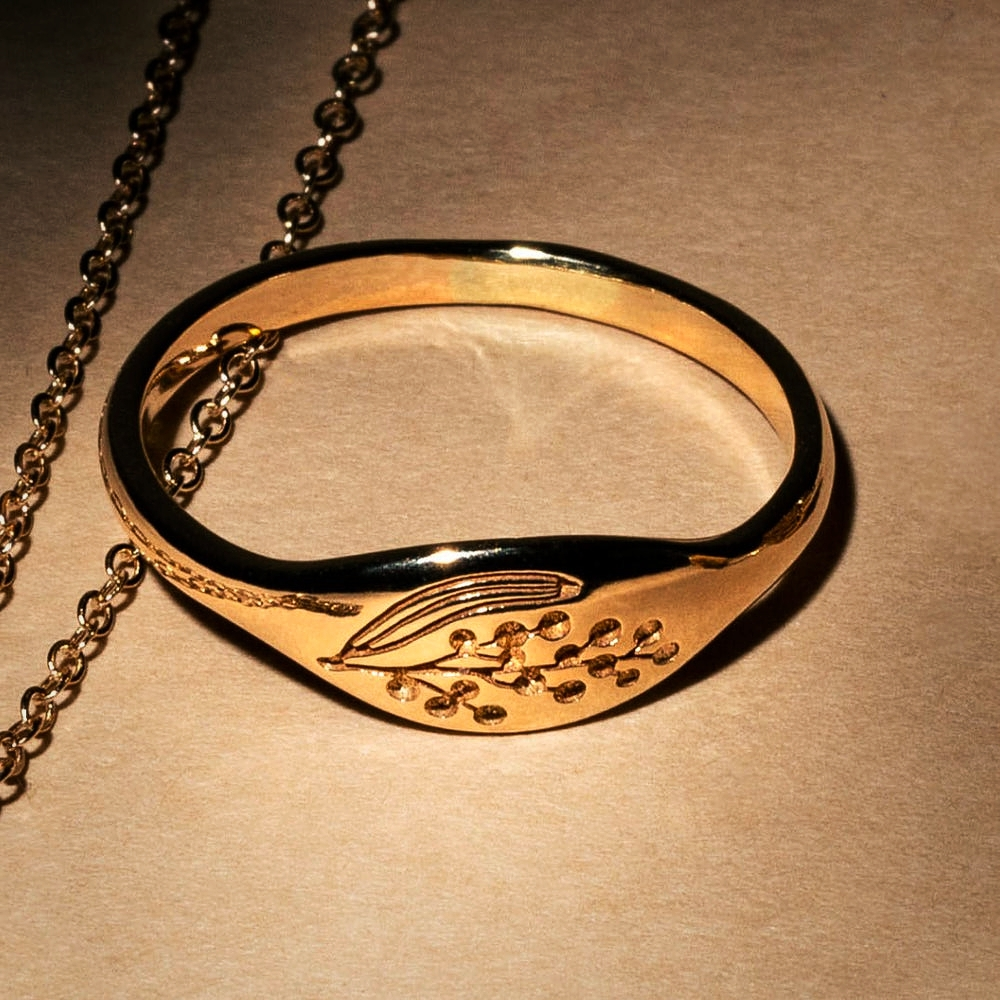
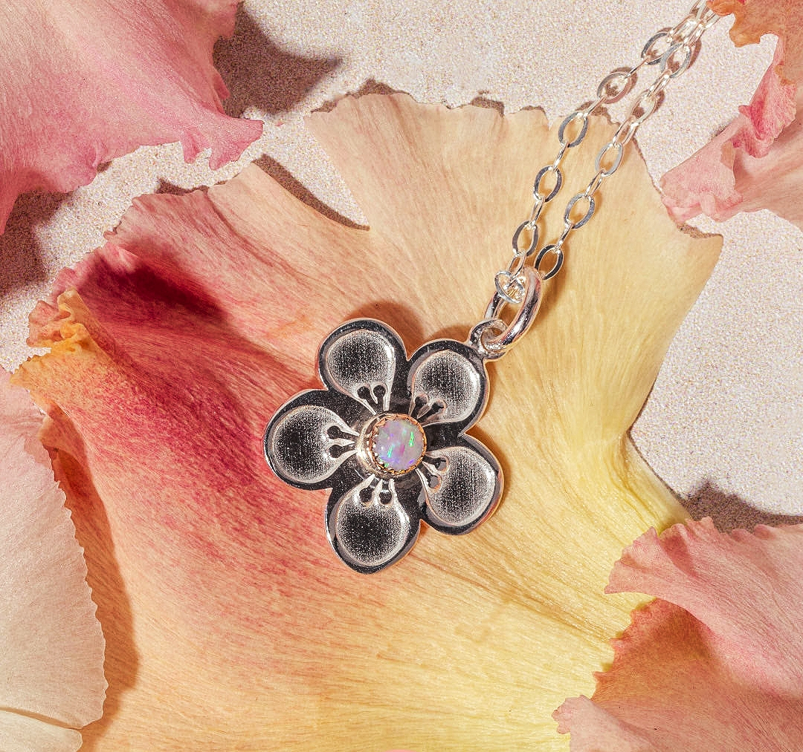
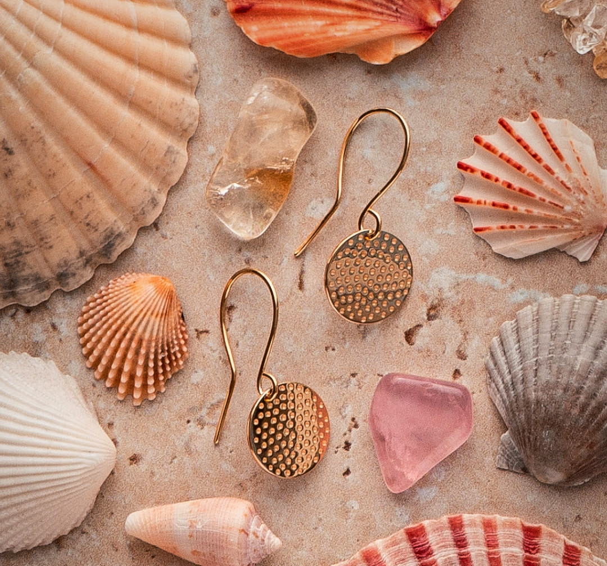
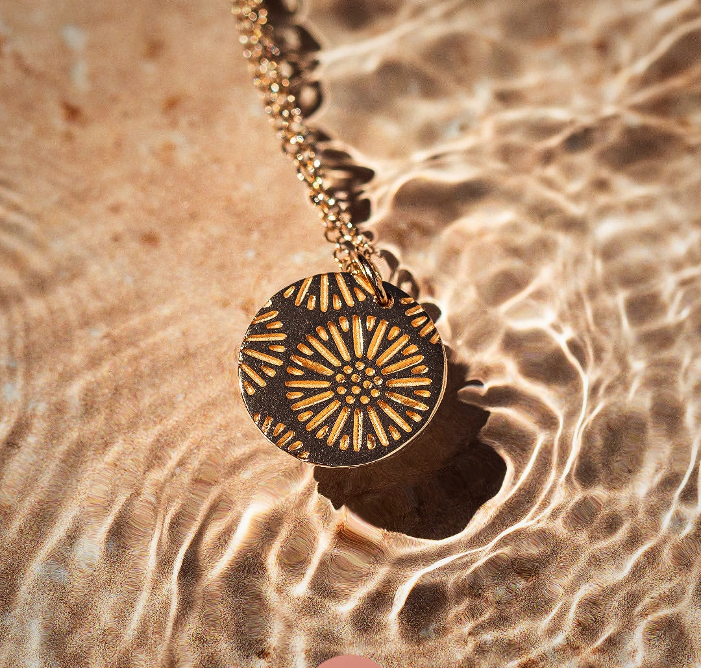

<html lang="en"></html>
<head>
    <meta charset="UTF-8">
    <meta name="viewport" content="width=device-width, initial-scale=1.0">
    <title>Blog</title>
    <link rel="stylesheet" href="https://cdnjs.cloudflare.com/ajax/libs/font-awesome/6.4.2/css/all.min.css">
    <link href="https://cdn.jsdelivr.net/npm/bootstrap@5.3.3/dist/css/bootstrap.min.css" rel="stylesheet" integrity="sha384-QWTKZyjpPEjISv5WaRU9OFeRpok6YctnYmDr5pNlyT2bRjXh0JMhjY6hW+ALEwIH" crossorigin="anonymous">
    <link rel="stylesheet" href="https://cdn.jsdelivr.net/npm/bootstrap@4.0.0/dist/css/bootstrap.min.css" integrity="sha384-Gn5384xqQ1aoWXA+058RXPxPg6fy4IWvTNh0E263XmFcJlSAwiGgFAW/dAiS6JXm" crossorigin="anonymous">
    <link rel="stylesheet" href="https://cdnjs.cloudflare.com/ajax/libs/font-awesome/4.7.0/css/font-awesome.min.css">
    <link href="https://fonts.googleapis.com/icon?family=Material+Icons" rel="stylesheet">
    <link rel="stylesheet" href="style.css">
</head>
<body>
    <section class="section-blog">
        <div class="blog-section">
            <h1>Our Blog </h1>

            <div class="blog-post">
                <div class="row">
                    <div class="col-md-6 image-section-box">
                        
                    </div>
                    <div class="col-md-6">
                        <div class="blog-content">
                            <h2>ARE GOLD RING WORTH THE INVESTMENT</h2>
                            <p class="post-meta">Posted on September 1, 2024 by Offer</p>
                            <p class="post-content">
                                Gold Ring have been a much sought after jewellery accessory for millennia ,with some of the oldest ring in gold found to date having been made around 6,500 years
                                .the beauty,elegance  preci
                                <span class="dots">...</span><span class="more">iousness and durability of solid gold has made it an enormously popular choice for rings, right up to the present day.
        
                                    Of course gold rings (as with all solid gold jewellery) are expensive, so why do people invest in them rather than more affordable metals?
                                    
                                    Read on to explore the benefits of owning and wearing solid gold jewellery, along with the versatility and timeless style of gold rings and the different types of gold
                                     rings that you could consider adding to your rings collection.</span>
                            </p>
                            <button class="read-more-btn">Read more</button>
                        </div>
                    </div>
                </div>
                
                
            </div>

            <div class="blog-post">
                <div class="row">
                    <div class="col-md-6 image-section-box">
                    
                    </div>
                    <div class="col-md-6">
                        <div class="blog-content">
                            <h2>All about Opal Jewellery
                            </h2>
                            <p class="post-meta">Posted on October 29, 2024 by Offer</p>
                            <p class="post-content">
                                Opal is a unique and fascinating gemstone that has been used in jewellery for millennia. With its distinctive play of colours and iridescence, 
                                opal jewellery is both beautiful and eye-catching. Op... 
                                <span class="dots">...</span><span class="more">als definitely deserve a place in your jewellery collection, but what do you really know about them?

                                    In this article, we'll explore the history of opal jewellery, how opals are formed, and how to care for opal jewellery to ensure that it stays looking beautiful for years to come.
                                    
                                    Let's get started ....</span>
                            </p>
                            <button class="read-more-btn">Read more</button>
                        </div>
                    </div>
                </div>    
            </div>


            
            <div class="blog-post">
                <div class="row">
                    <div class="col-md-6 image-section-box">
                        
                    </div>
                    <div class="col-md-6">
                        <div class="blog-content">
                            <h2>The Ultimate Guide to Styling Gold Jewellery</h2>
                            <p class="post-meta">Posted on November 9, 2024 by Offer</p>
                            <p class="post-content">
                                Who doesn't love the gorgeous glamour of gold jewellery? Its beautiful quality and colour make it the most sought after metal when it comes to jewellery. 
                                That said, even gold jewellery won't do mu...
                                <span class="dots">...</span><span class="more">The Ultimate Guide to Styling Gold Jewellery
                                    How to style gold jewelleryWho doesn't love the gorgeous glamour of gold jewellery? Its beautiful quality and colour make it the most sought after metal when it comes to jewellery. That said, even gold jewellery won't do much for you if you don't consider how to style it.
                                    
                                    When styling jewellery, some people make the mistake of overdoing it without panache, leaving them looking overdone - and not in a good way. Others may be too subdued and draw little if any attention to their jewellery choices. There are also those who wear the same pieces day in and day out, some of which may be lovely but they get lost in repetition (and I bet they need a good clean too!).
                                    
                                    When it comes to wearing gold jewellery especially, you'll really want to make the most of your investment and style it so you look your best when wearing it - and so that you show it off appropriately.
                                    
                                    Here is our best guide to styling different types of gold jewellery. Let's dive in ....</span>
                            </p>
                            <button class="read-more-btn">Read more</button>
                        </div>
                    </div>
                </div>
            </div>

            <div class="blog-post">
                <div class="row">
                    <div class="col-md-6 image-section-box">
                        
                    </div>
                    <div class="col-md-6">
                        <div class="blog-content">
                            <h2>Don't be Conned: Jewellery Myths & Misleading Marketing
                            </h2>
                            <p class="post-meta">Posted on December 25, 2024 by Offer</p>
                            <p class="post-content">
                                Recently I saw an ad for a new jewellery brand which bragged about the amazing features of their jewellery which they claimed made it superior to other jewellery designs. As a jewellery profession...
                                <span class="dots">...</span><span class="more">professional I was very skeptical of the claims being made, so I decided to do a bit of research into misleading marketing to try to bust some jewellery myths.

                                    I hope this will help you to make better choices when you're shopping for jewellery as nobody likes to be misled or conned. So let's get started.</span>
                            </p>
                            <button class="read-more-btn">Read more</button>
                        </div>
                    </div>
                </div>
            </div>


            <!-- Add more blog posts as needed -->
        </div>
    </section>
    <script src="script.js"></script>
    <script src="https://ajax.googleapis.com/ajax/libs/jquery/3.7.1/jquery.min.js"></script>
    <script src="https://maxcdn.bootstrapcdn.com/bootstrap/3.4.1/js/bootstrap.min.js"></script>
    <script src="https://code.jquery.com/jquery-3.2.1.slim.min.js" integrity="sha384-KJ3o2DKtIkvYIK3UENzmM7KCkRr/rE9/Qpg6aAZGJwFDMVNA/GpGFF93hXpG5KkN" crossorigin="anonymous"></script>
    <script src="https://cdn.jsdelivr.net/npm/popper.js@1.12.9/dist/umd/popper.min.js" integrity="sha384-ApNbgh9B+Y1QKtv3Rn7W3mgPxhU9K/ScQsAP7hUibX39j7fakFPskvXusvfa0b4Q" crossorigin="anonymous"></script>
    <script src="https://cdn.jsdelivr.net/npm/bootstrap@4.0.0/dist/js/bootstrap.min.js" integrity="sha384-JZR6Spejh4U02d8jOt6vLEHfe/JQGiRRSQQxSfFWpi1MquVdAyjUar5+76PVCmYl" crossorigin="anonymous"></script>
    <script src="https://kit.fontawesome.com/0c851fcb8c.js" crossorigin="anonymous"></script>  
</body>
</html>